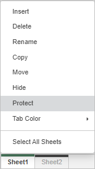
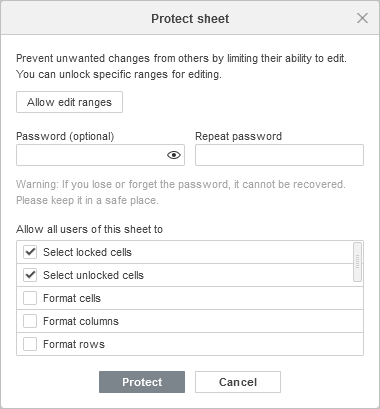
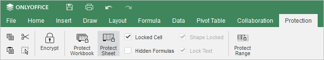
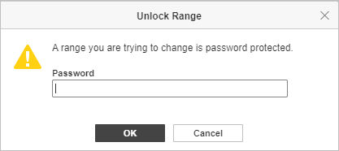
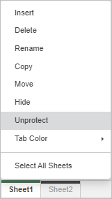
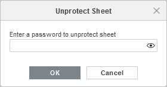

Zaštita lista
Opcija Protect Sheet omogućava vam da zaštitite listove i kontrolišete izmene koje drugi korisnici prave na listu kako biste sprečili neželjene promene podataka i ograničili mogućnosti uređivanja drugih korisnika. List možete zaštititi sa ili bez lozinke. Ako ne koristite lozinku, svako može ukloniti zaštitu sa zaštićenog lista.
Zaštita lista
-
Idite na karticu Protection i kliknite na dugme Protect Sheet na gornjoj alatnoj traci.
ili
kliknite desnim tasterom miša na karticu lista koji želite da zaštitite i izaberite Protect sa liste opcija
-
U prozoru Protect sheet koji se otvori, unesite i potvrdite lozinku, ako želite da postavite lozinku za uklanjanje zaštite sa ovog lista.

Lozinka se ne može povratiti ako je izgubite ili zaboravite. Molimo vas da je sačuvate na bezbednom mestu.
-
Označite polja u listi Allow all users of this sheet to da biste izabrali operacije koje će korisnici moći da obavljaju. Operacije Select locked cells i Select unlocked cells su podrazumevano dozvoljene.
Operacije koje korisnik može imati dozvolu da izvršava.
- Izbor zaključanih ćelija
- Izbor otključanih ćelija
- Formatiranje ćelija
- Formatiranje kolona
- Formatiranje redova
- Umetanje kolona
- Umetanje redova
- Umetanje hiperveze
- Brisanje kolona
- Brisanje redova
- Sortiranje
- Korišćenje automatskog filtera
- Korišćenje PivotTable i PivotChart
- Uređivanje objekata
- Uređivanje scenarija
Imajte u vidu da kada je list zaštićen, nijedan korisnik ne može sortirati ili filtrirati podatke. Da bi filtriranje pravilno funkcionisalo, parametri filtriranja moraju biti primenjeni pre zaštite lista.
-
kliknite na dugme Protect da biste omogućili zaštitu. Dugme Protect Sheet na gornjoj alatnoj traci ostaje istaknuto kada je list zaštićen.

Dozvoli uređivanje opsega
- Kliknite na dugme Protect Sheet na gornjoj alatnoj traci kartice Protection. Otvoriće se prozor Protect sheet.
- Kliknite na dugme Allow edit ranges da biste odredili opsege koji će biti otključani lozinkom kada je list zaštićen. Ova opcija funkcioniše samo za zaključane ćelije.
-
Kliknite na dugme New da biste dodali novi opseg. Otvoriće se prozor New range. Navedite Title opsega, sam opseg i unesite i ponovite lozinku. Kliknite na OK kada završite.
Lozinka se ne može povratiti ako je izgubite ili zaboravite. Molimo vas da je sačuvate na bezbednom mestu.
-
Kada list nije zaštićen, i dalje možete menjati dozvoljene opsege:
- Ako želite da izmenite kreirani opseg, izaberite ga u prozoru Allow users to edit ranges i kliknite na dugme Edit.
- Da biste obrisali kreirani opseg, izaberite ga u prozoru Allow users to edit ranges i kliknite na dugme Delete.
- Kliknite na dugme Protect kada ste spremni.
Za opsege zaštićene lozinkom, kada neko pokuša da uredi izabrani opseg ćelija, pojaviće se prozor Unlock Range, u kojem se od korisnika traži da unese lozinku.

Da biste saznali više o zaštiti opsega, pogledajte sledeći članak.
Uklanjanje zaštite sa lista
-
Da biste uklonili zaštitu sa lista:
-
kliknite na dugme Protect Sheet,
ili
kliknite desnim tasterom miša na karticu zaštićenog lista i izaberite Unprotect sa liste opcija
-
unesite lozinku i kliknite na OK u prozoru Unprotect Sheet ako se to zatraži.

-
kliknite na dugme Protect Sheet,